Tipos de fibras nerviosas · Biofísica, Grado en Bioquímica (US) · Prof. Rafael J. Montoro
El potencial de acción se genera en un punto concreto de la neurona, la zona gatillo (trigger zone), y desde ahí tiene que viajar por todo el axón hasta los terminales. Conducción es justo eso: cómo se desplaza el potencial de acción a lo largo de la fibra.
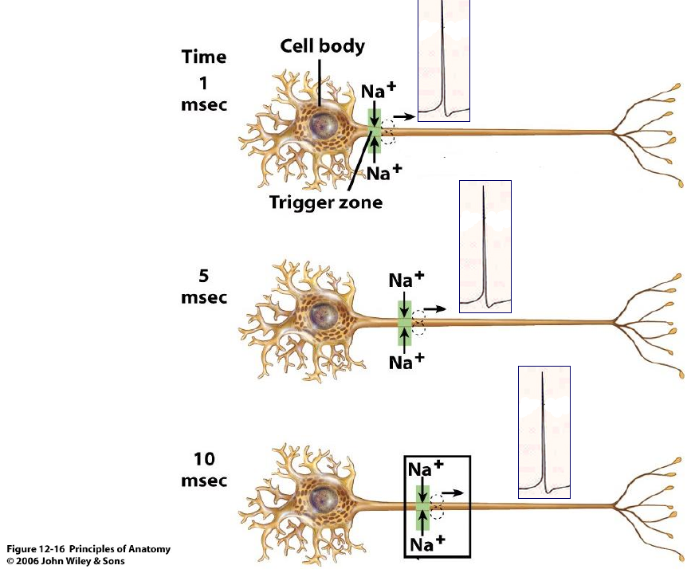
Fíjate en la diapositiva: a 1, 5 y 10 ms el potencial de acción tiene la misma forma y el mismo tamaño, solo que está más lejos. Esto es lo que en el Tema 11 se llamaba propagación sin decremento.
🔗 Es justo lo contrario de lo que pasaba con los potenciales pasivos del Tema 10. Aquellos se iban haciendo cada vez más pequeños con la distancia, siguiendo la constante de longitud λ. El potencial de acción no se apaga porque se regenera en cada trocito de membrana, como vamos a ver.
Según el tipo de neurona, el potencial de acción se inicia en un sitio u otro. En una motoneurona se inicia en el cono axónico, al salir del soma. En una neurona sensorial se inicia cerca de las terminaciones sensoriales de la periferia. En los dos casos viaja después hasta los terminales del axón.
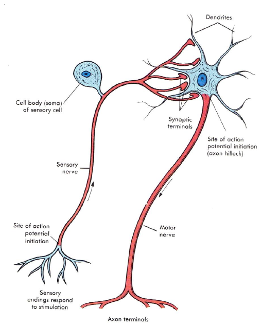
Un potencial sináptico excitador que nace en una dendrita viaja de forma pasiva hasta el soma, así que se va haciendo más pequeño. 🔗 Es lo que vimos con λ en el Tema 10. Aun así, puede acabar generando un potencial de acción en el segmento inicial del axón, que es el cono axónico o zona gatillo.
La razón es que en esa zona hay una densidad de canales de Na⁺ muy alta, y por eso el umbral es más bajo que en el resto de la neurona. En la gráfica de abajo, el umbral está en torno a −35 mV en dendritas y soma, pero baja hasta casi −55 mV en la zona gatillo. El potencial sináptico, aunque ha ido perdiendo tamaño, ahí sí supera el umbral.
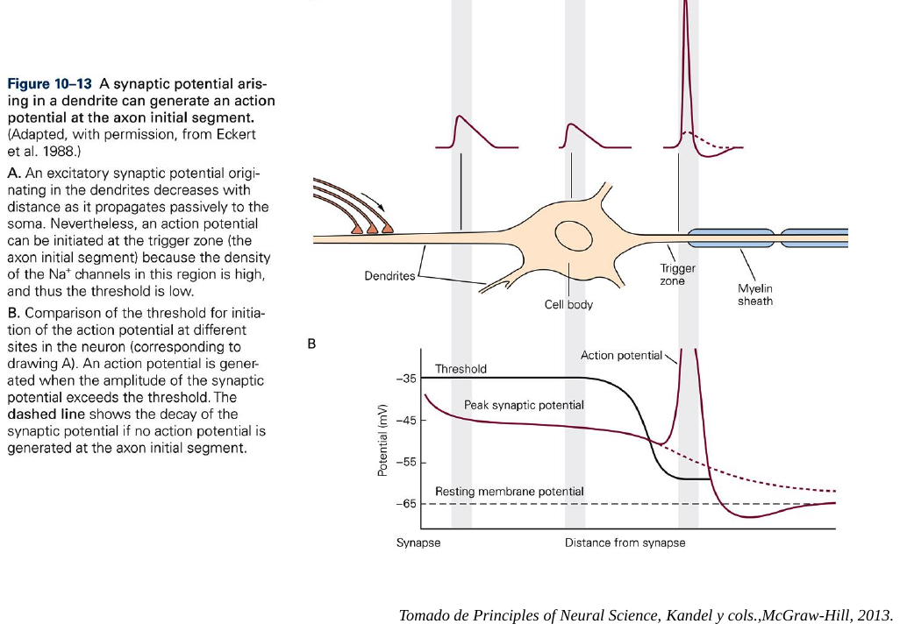
En un trozo de axón que está disparando, el interior se ha vuelto positivo (potencial invertido), mientras que el trozo de al lado sigue en reposo, con el interior negativo. Esa diferencia hace que las cargas positivas se muevan por dentro del axón hacia el trozo vecino. Luego salen a través de su membrana y vuelven por fuera, cerrando un circuito. Eso es un circuito local de corriente.
Esa corriente que llega al trozo vecino lo despolariza. Cuando alcanza el umbral, se abren allí los canales de Na⁺ y se genera un potencial de acción nuevo. Ese, a su vez, despolariza al siguiente trozo, y así sucesivamente. Por eso decimos que el potencial de acción se regenera a lo largo de toda la fibra.
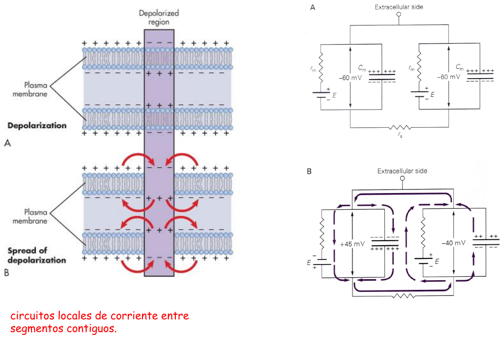
🔗 En el circuito de la diapositiva reconocerás los elementos del Tema 10: cada trozo de membrana tiene su rm, su Cm y su pila E, y los trozos están unidos por dentro por la resistencia axial ra.
La corriente local sale hacia los dos lados, pero el potencial de acción solo avanza hacia delante. El trozo que acaba de disparar queda detrás repolarizándose: sus canales de Na⁺ están inactivados y tiene los canales de K⁺ abiertos. Es el período refractario del Tema 11, así que ese trozo no puede volver a disparar todavía.
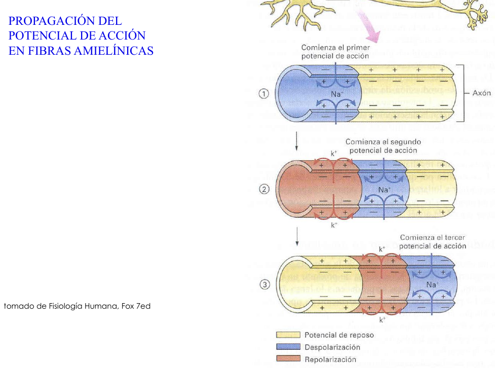
La velocidad depende de hasta dónde llega la corriente local por delante del potencial de acción. Cuanto más lejos llegue, más trozo de membrana se despolariza a la vez y más rápido avanza. Y lo lejos que llega lo marca la constante de longitud:
λ = √( rm / ra )
🔗 Como dijo el profesor en el Tema 10, a mayor diámetro la sección es mayor, así que ra es menor, λ es mayor y la señal llega más lejos. Por eso los axones amielínicos rápidos son muy gordos. El axón gigante del calamar mide hasta 800 µm y aun así solo alcanza unos 20–25 m/s.
📝 El problema es que no se pueden hacer todos los axones así de gordos, porque no cabrían en el sistema nervioso. La solución de los vertebrados es la mielina.
La mielina son capas y capas de membrana de una célula glial, enrolladas alrededor del axón. En el sistema nervioso central (SNC) la forman los oligodendrocitos, y un solo oligodendrocito envía prolongaciones que mielinizan trozos de varios axones. En el sistema nervioso periférico (SNP) la forman las células de Schwann, y cada una se enrolla sobre un solo trozo de un axón.
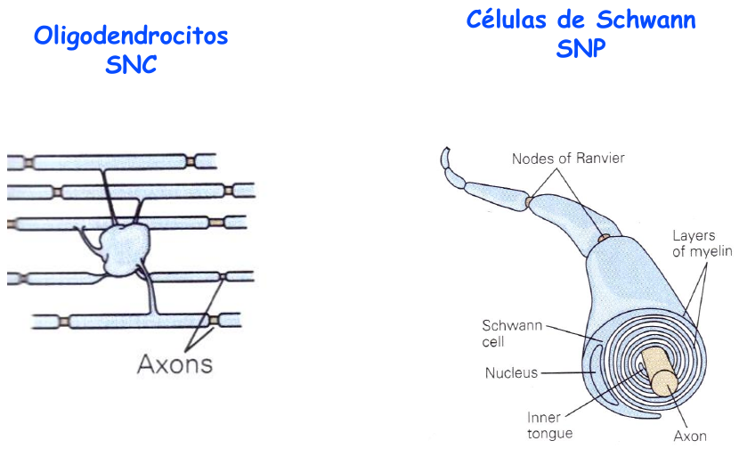
La mielina no es continua. Entre dos trozos mielinizados quedan pequeños huecos de axón al descubierto, los nodos de Ranvier. El trozo mielinizado entre dos nodos se llama internodo o internódulo.
Lo importante está en cómo se reparten los canales. Los canales de Na⁺ voltaje-dependientes (Nav) están concentrados en el nodo. Los canales de K⁺ (Kv) quedan escondidos bajo la mielina, a los lados del nodo. Entre ambos hay una zona de anclaje de la mielina (en la imagen, caspr).
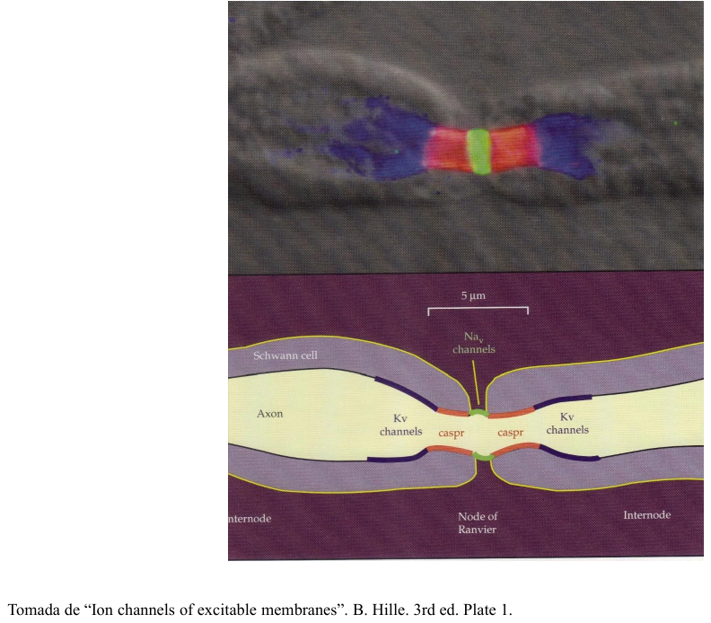
En una fibra mielínica el potencial de acción solo se regenera en los nodos, porque es ahí donde están los canales de Na⁺. Desde un nodo activo, la corriente local viaja por dentro del internodo muy deprisa y casi sin perderse, porque la mielina aísla, y llega al nodo siguiente con fuerza suficiente para llevarlo al umbral.
Así, el potencial de acción parece ir "saltando" de nodo en nodo. Fíjate en la gráfica de tiempo frente a distancia: en los internodos la línea es casi plana, porque se recorren casi sin gastar tiempo. Donde se gasta el tiempo es en los nodos, en las rampas, que es donde hay que regenerar el potencial de acción.
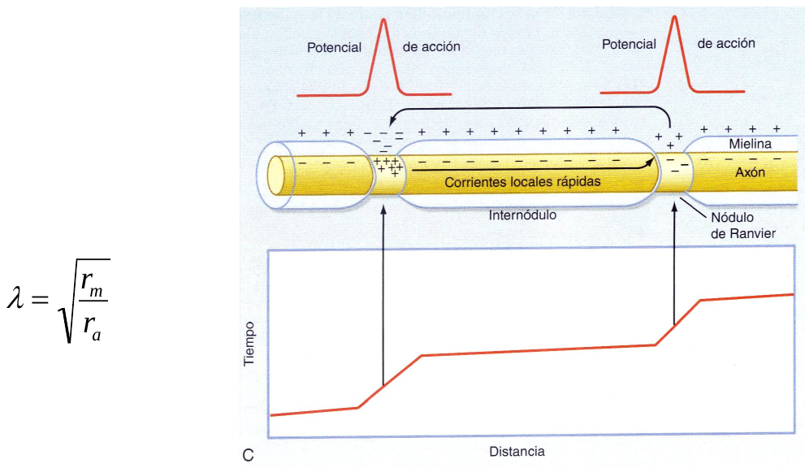
🔗 Recuerda del Tema 10 que la membrana es un condensador y que su capacidad es:
cm = ε · S / d
La mielina son muchas capas de membrana una encima de otra, así que aumenta muchísimo la separación d entre el interior y el exterior. Si d aumenta, la capacidad disminuye.
¿Y por qué es bueno tener menos capacidad? Por la relación:
ΔV = ΔQ / C
Con una C pequeña, la misma cantidad de carga produce un cambio de voltaje mayor. Dicho de otra forma, la corriente que llega no se "gasta" en cargar el condensador del internodo y queda casi toda para despolarizar el nodo siguiente. 🔗 Es lo que veíamos en el Tema 10 con el pulso cuadrado: parte de la corriente se iba al condensador y solo la que pasaba por la resistencia cambiaba el voltaje.
📝 Además, la mielina también aumenta mucho rm, porque se escapa muy poca corriente a través de ella. Con rm grande, λ es grande y la corriente llega lejos.
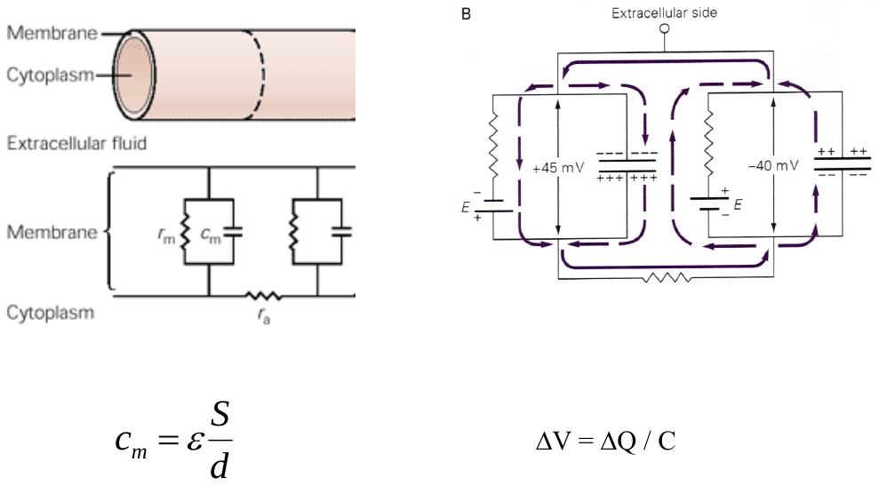
Igual que en las amielínicas, a mayor diámetro, menor ra y mayor λ, así que más velocidad. Lo espectacular es la comparación de la gráfica. Un axón mielinizado de gato de solo 10 µm conduce a unos 80–90 m/s. Un axón amielínico de calamar de 800 µm no pasa de unos 25 m/s.
En las fibras mielinizadas, además, la velocidad aumenta de forma casi lineal con el diámetro.
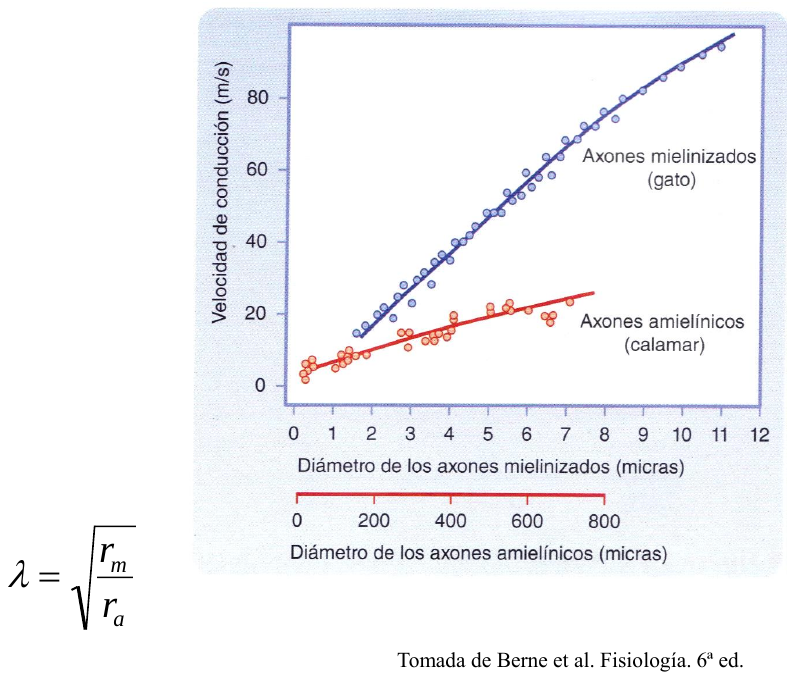
Como el tiempo se gasta en los nodos, cuanto más separados estén los nodos, menos paradas hay que hacer y más rápido va el potencial de acción. La diapositiva vuelve a poner λ al lado por una razón: la distancia entre nodos no puede ser más grande de lo que llega la corriente.
📝 Si los nodos estuvieran demasiado separados, la corriente llegaría al nodo siguiente demasiado atenuada (🔗 la caída exponencial con λ) y no alcanzaría el umbral, así que la conducción fallaría. Hay un equilibrio entre ir rápido y llegar con seguridad.
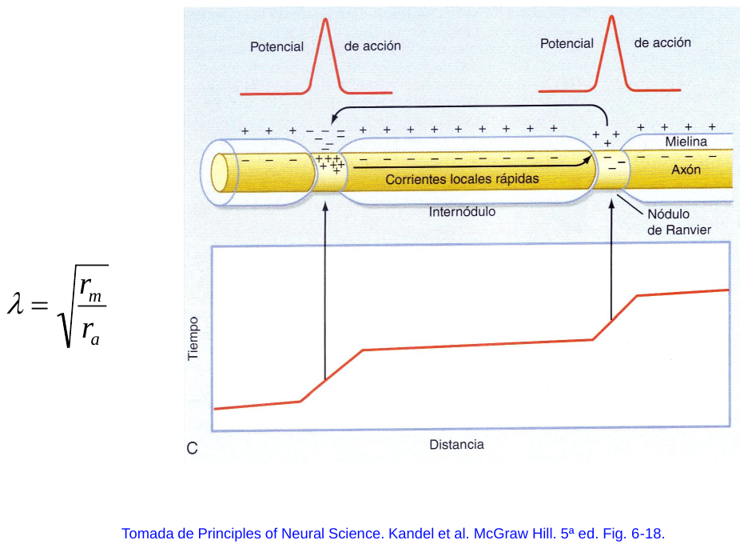
En un axón normal, la densidad de corriente es muy alta en los nodos y muy baja en los internodos, así que el potencial de acción salta rápido de nodo en nodo. Si una zona pierde la mielina, pasan varias cosas a la vez. La corriente local tiene que cargar una capacidad mucho mayor. Además, rm baja, porque la membrana ya no está aislada, y por tanto λ se acorta y la corriente no llega lejos.
A eso se suma que en la zona desmielinizada hay pocos canales de Na⁺, porque estaban concentrados en los nodos. Resultado: la conducción se enlentece o se bloquea. 📝 Es lo que ocurre en enfermedades desmielinizantes como la esclerosis múltiple.
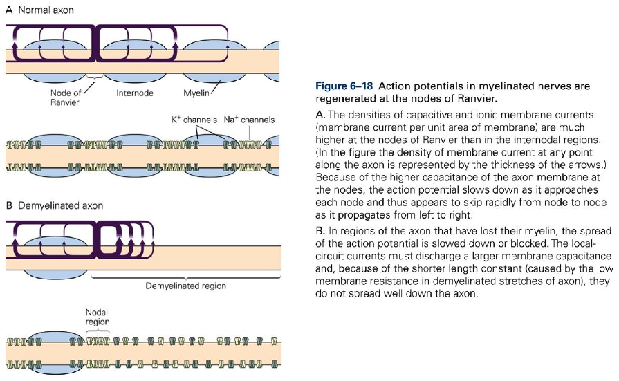
Las fibras aferentes de los nervios periféricos se clasifican de dos maneras. En los nervios musculares se usan números romanos (I, II, III, IV) y se clasifican según su diámetro. En los nervios cutáneos se usan letras (Aα, Aβ, Aδ, C) y se clasifican según su velocidad de conducción. En la práctica se corresponden una a una.
| Nervio muscular | Nervio cutáneo | Diámetro (µm) | Velocidad (m/s) | |
|---|---|---|---|---|
| Mielinizada grande | I | Aα | 12–20 | 72–120 |
| Mielinizada mediana | II | Aβ | 6–12 | 36–72 |
| Mielinizada pequeña | III | Aδ | 1–6 | 4–36 |
| Amielínica | IV | C | 0,2–1,5 | 0,4–2,0 |
Todo encaja con lo anterior: cuanto más gruesa y más mielinizada, más rápida. Las fibras Aα son las autopistas, a más de 100 m/s. Las fibras C, finas y sin mielina, van a paso de tortuga, a 1–2 m/s.
Un nervio no es un solo axón, sino un haz de muchas fibras de distintos tipos. Si se estimula el nervio entero y se registra desde fuera un poco más lejos, lo que se obtiene es la suma de los potenciales de acción de todas las fibras. Eso es el potencial de acción compuesto.
Como cada tipo de fibra conduce a una velocidad distinta, sus potenciales de acción llegan al electrodo en momentos diferentes. Primero llega el pico grande de las Aα y Aβ, en 1–2 ms. Un poco después llega el de las Aδ. Y mucho más tarde, hacia los 35–40 ms, aparece una ondita pequeña: las fibras C.
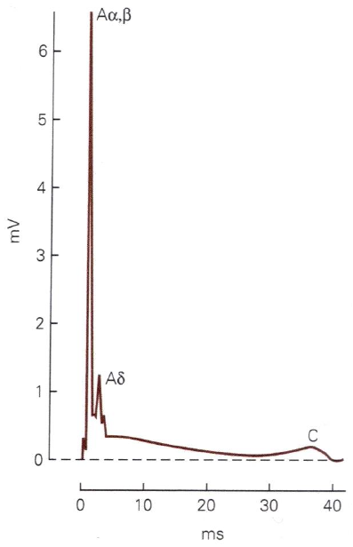
📝 Cuidado con una diferencia importante. El potencial de acción de una fibra sigue la ley del todo o nada. El potencial compuesto, en cambio, sí es graduable: si estimulas más fuerte, se activan más fibras y el registro se hace más grande. Además, las fibras gruesas dan una señal extracelular más grande, por eso el pico Aα,β es tan alto y el de las C tan bajito.
✅ El potencial de acción se conduce sin decremento porque se regenera: los circuitos locales de corriente despolarizan el trozo vecino hasta el umbral.
✅ Se inicia en el cono axónico porque ahí hay más canales de Na⁺ y el umbral es más bajo. Es el punto de integración.
✅ No vuelve hacia atrás porque el trozo que acaba de disparar está en período refractario, con los canales de Na⁺ inactivados.
✅ La velocidad depende de λ = √(rm/ra): más diámetro significa menos ra y más velocidad.
✅ La mielina baja la capacidad (cm = εS/d, al aumentar d) y sube rm. Así el potencial de acción solo se regenera en los nodos de Ranvier: es la conducción saltatoria.
✅ Tres factores en las mielínicas: capacidad, diámetro y distancia internodal.
✅ La desmielinización enlentece o bloquea la conducción.
✅ Tipos de fibras: Aα/I, Aβ/II, Aδ/III y C/IV, de más rápida a más lenta.
✅ Potencial de acción compuesto: suma de todas las fibras de un nervio, con picos que llegan separados según su velocidad.